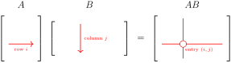

in other words, column \(j\) of \(AB\) is the matrix-vector product \(A\mathbf{b}_j\) of \(A\) and the corresponding column \(\mathbf{b}_j\) of \(B\text{.}\)
Activity2.3.1.Computing Matrix Product Using Columns.
Activity2.3.2.Matrix Transformations and Composition.
Let \(A\) be \(m\times n\) and \(B\) be \(n\times k\text{,}\) and build the induced matrix transformations \(T_A:\R^n\to \R^m\text{,}\) and \(T_B:\R^k\to\R^n\text{.}\) Consider the composition of \(T_A\) and \(T_B\text{,}\) i.e. the transformation \((T_A \circ T_B): \R^k \to \R^m\) defined by \((T_A\circ T_B)\mathbf{x}=T_A(T_B(\mathbf{x}))\text{.}\) Compute \((T_A\circ T_B)\mathbf{x}\) for a general \(\mathbf{X} \in \R^k\text{.}\)
If \(A\) is \(m\times n\) and \(B\) is \(n\times k\text{,}\) then the composite of their induced matrix transformations is another matrix transformation, and \(T_A\circ T_B=T_{AB}\text{,}\) where \(AB\) is the matrix product.
SubsectionDot Product Definition of Matrix Product
Theorem2.3.3.
Let \(A\) be an \(m\times n\) matrix, \(B\) be an \(n\times k\) matrix. The \((i,j)\) entry of \(AB\) is the dot product of row \(i\) of \(A\) with column \(j\) of \(B\text{.}\)
where \(c_{ij} = \sum_{\ell=1}^{n} a_{i\ell} b_{\ell,j}\text{.}\)

Figure2.3.4.The \((i,j)\)th entry of \(AB\) is obtained by taking the dot product of the \(i\)th row of \(A\) with the \(j\)th column of \(B\text{.}\) Adapted from Vretta-Lyryx.
For each of the following products, determine (i) whether the product is defined, and (ii) if defined, what is the size of the resulting matrix.
(a)
\(AB\)
Solution.
The matrix \(A\) is \(2 \times 3\) and the matrix \(B\) is \(3\times 2\text{.}\)
\(AB\) is defined because the number of columns of \(A\) (\(3\)) equals the number of rows of \(B\) (\(3\))
The resulting matrix will be \(2\times 2\)
(b)
\(BA\)
Solution.
The matrix \(B\) is \(3\times 2\) and matrix \(A\) is \(2\times 3\)
\(BA\) is defined because the number of columns of \(B\) (\(2\)) equals the number of rows of \(A\) (\(2\))
The resulting matrix will be \(3\times 3\)
(c)
\(BC\)
Solution.
The Matrix \(B\) is \(3\times 2\) and matrix \(C\) is \(2\times 2\text{.}\)
\(BC\) is defined because the number of columns of \(B\) (\(2\)) equals the number of rows of \(C\) (\(2\))
The resulting matrix will be \(3\times 2\)
(d)
\(CB\)
Solution.
Matrix \(C\) is \(2\times 2\) and matrix \(B\) is \(3\times 2\)
\(CB\) is not defined because the number of columns of \(C\) (\(2\)) does not equal the number of rows of \(B\) (\(3\))
Fact2.3.7.A Key Property of Identity Matrices.
If \(A\) is any \(m\times n\) matrix,
\begin{equation*}
AI_n = A \quad\text{ and }\quad I_mA = A
\end{equation*}
SubsectionMatrix Powers
Definition2.3.8.Matrix Powers.
Let \(A\) be a square \(n \times n\) matrix. Then we define \(A^2 = AA\text{,}\)\(A^3 = AAA\text{,}\) and so on. We make the convention that \(A^0 = I_n\text{.}\)